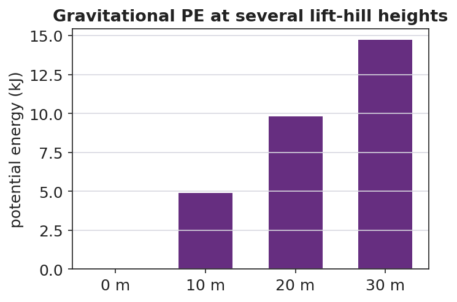

Unit: Work, Energy & Power — Lesson 04: Gravitational Potential Energy
Phenomenon
A roller-coaster car is slowly hauled up the lift hill. Nothing exciting happens on the way up — but every meter of height stores energy the coaster will spend on the way down. A water tower does the same thing with water.
Driving Question
What is being stored as the car climbs, and what does the amount of stored energy depend on?
Notice & Wonder
Watch the slow climb up the lift hill. Write what you notice and what you wonder.
Initial Model
Draw the coaster car on the lift hill at three heights. Predict: when the height doubles, the stored energy becomes how many times bigger? Does it double? More? Less?
Investigate
A 500 kg coaster car (g ≈ 9.81 m/s²). Slide the height and watch the car rise on the track while the PE bar grows. PE = mgh grows in a straight line — double the height, double the stored energy.
Mass m = 500 kg · g ≈ 9.81 m/s² · PE = mgh = 0 J
Make It Make Sense
- A 2.0 kg book sits on a 1.0 m table. What is its gravitational PE relative to the floor? Use PE = mgh with g ≈ 9.81 m/s².
- Two coaster cars sit at the same height. Car A is 400 kg; car B is 800 kg. Which has more PE, and by what factor? Explain.
- Why must we always state the reference height (the "zero") when we report a potential energy?
Stuck? Sentence frame
"The object stores ___ J because PE = m·g·h, measured from the ___ as the zero."
Key Vocabulary (max 3)
- potential energy — energy stored because of an object's position; gravitational PE = mgh, in joules
- height — the vertical distance above a chosen reference point; the h in PE = mgh
- gravitational field — the region where gravity acts; its strength g ≈ 9.81 m/s² near Earth's surface sets the g in PE = mgh
Revise Your Model
Using PE = mgh, make a bar chart of PE at several lift-hill heights for one car. What pattern do the bar heights follow? Revise your prediction: when height doubles, PE becomes how many times bigger, and why?

Return to the Phenomenon
In one Because/But/So sentence, explain why the tallest lift hill stores the most energy — and why we always state PE relative to the ground.
Exit Ticket + Closing Reflection
- A 500 kg roller-coaster car is hauled to the top of a 30 m lift hill. (Use g ≈ 9.81 m/s².)
(a) Calculate its gravitational potential energy relative to the ground. Show PE = mgh.
(b) If the lift hill were only 15 m, what would its PE be, and how does it compare?
(c) Explain why your answer to (a) would change if we measured height from a platform halfway up instead of the ground. - Reflection: What is one thing that surprised you today? Who helped you make sense of something?